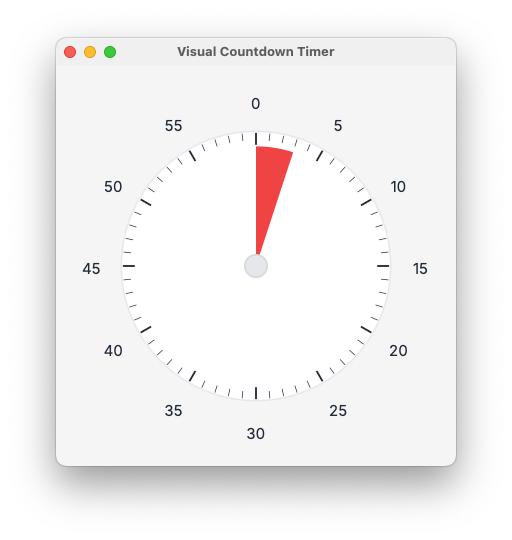

Open source • v0.1.0
Visual Countdown Timer
A distraction-free 60-minute visual timer.
Click any tick to start a countdown from that minute mark; a red sector shrinks as time passes, and each minute boundary briefly flashes its tick to signal progress.
Minute labels can be hidden (Cmd/Ctrl + H) to maximize dial space.
Window presets (Cmd/Ctrl + 1–5) resize the app for quick context switches.

How it works
Click any tick to start a countdown from that minute mark. A red wedge shrinks as time passes, and each minute boundary briefly flashes its tick. Hide labels to give the dial more room, or hit a preset to resize the window fast.
macOS Gatekeeper
If macOS blocks the downloaded app as “damaged” or “unverified,” clear the quarantine flag via terminal app:
xattr -rd com.apple.quarantine "/Applications/Visual Countdown Timer.app"
Development
- Install deps:
npm install - Run tests:
npm test - Dev Tauri app:
npm run tauri dev - Build bundle:
npm run tauri build - Build docs for GitHub Pages:
npm run build-standalone